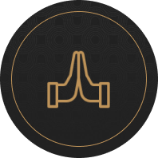
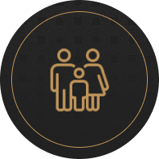

“My family became a clearer priority as I was reminded that my first ministry is as a husband and father.”
Read full review on Google ↗THE RISE UP KINGS REVIVAL
Christian Men’s
Ministry Leaders:
Strengthen the Man
Behind the Mission.
A three-day, Christ-centered intensive for men who lead other men through nonprofits, outreach ministries, discipleship groups, retreats, and Christian organizations.
THE RISE UP KINGS REVIVAL 1:25 · SOUND ON
See the experience. Hear the purpose behind Revival.
Your details first. Then tell us what brought you here.
3 DAYSIn person. Christ-centered.
FOR MEN’S LEADERSThe man behind the mission.
4 PILLARSFaith. Family. Fitness. Finances.
THE MAN BEHIND THE MISSION
You can’t lead
other men while
running on empty.
The next gathering needs planning. The messages keep coming. Someone always needs your attention.
At home, your mind is still on the men you serve. Your Bible is open, and you are already thinking about what somebody else needs to hear. There are things you need to say out loud, but being the leader makes honesty feel complicated.
The mission can keep moving long after the private man starts paying for it.
Give that man attention before exhaustion, distance at home, or the thought of walking away forces the conversation.
Our Approach
Unmasking the Struggles of Spiritual Leadership
Leading men toward Christ is meaningful work, but carrying other men's burdens can make it easy to neglect your own. Revival is a three-day intensive designed to help Christian men's ministry leaders confront what has been pushed aside, strengthen the man behind the mission, and return ready to lead from a healthier place.
"For the Spirit God gave us does not make us timid, but gives us power, love, and self-discipline."
2 Timothy 1:7
Why Rise Up Kings
Strengthening Men's Ministry Leaders to Serve with Conviction and Thrive in Their Calling
With Rise Up Kings, you'll receive hands-on training, resources, and access to an exclusive network, all tailored for impactful coaching in faith, family, fitness, and finances.
01
Isolation
When other men look to you for strength, admitting your own struggles can feel complicated. Revival gives you a trusted brotherhood where honesty is met with support, challenge, and humility.
02
Balancing Family and Ministry
The mission can follow you home. Revival helps you lead with purpose while staying present and connected with your wife and children.
03
Financial Management
Financial pressure can quietly drain your focus and confidence. Revival gives you practical tools to build stronger habits and steward what God has entrusted to you.
04
Physical Well-being
Serving others can push your physical health to the bottom of the list. Revival helps you rebuild the discipline and energy required to lead well for the long haul.
05
Spiritual Formation
Leading spiritual work does not automatically keep your own relationship with God strong. Revival creates space to renew your faith and reconnect with the reason you answered the call.
RUK 4 Pillars Of Power


Google reviews mentioning Revival
“I arrived feeling alone, but quickly discovered a community of men just like me.”
Read full review on Google ↗“The amount of true biblical love, encouragement, and discipleship that I was sharpened with was life changing and empowering.”
Read full review on Google ↗RUK Ministries
For leaders of Christian men's organizations.
We help men step into their God-given potential and gain power and self-discipline.
- Do you struggle showing up powerfully everyday?
- Have you lost your fire and passion?
- Do you find it difficult to serve the mission while staying connected to your wife and kids?
- Have you lost the passion in your marriage?
- Do you believe God has called you to do more?
- Have you considered leaving ministry altogether?
Rooted In The Word
Of Christ Jesus
Rise Up Kings is a movement founded on the Christian faith. It is our core spiritual conviction that the Christian faith provides people an opportunity to be saved, and to be spiritually reborn.
Our work as a movement is largely about leading men to embrace the grace-gift of salvation, and to engage more deeply in their process of sanctification so they can live with strength!
FAQ
Got Questions? We Have Answers.
RUK Ministries is a non-denominational Christian organization. We welcome men who lead or serve Christian men through nonprofits, outreach ministries, discipleship groups, ministry networks, retreats, and other Bible-based organizations. Our teaching is grounded in biblical principles with Jesus Christ at the core.
After the event, you will have the opportunity to join the RUK Ministries community, a brotherhood of Christian leaders committed to supporting each other in their journey of faith and leadership. We offer ongoing training, seminars, and webinars to support your continued growth.
The event focuses on the man behind the mission: his faith, family, fitness, finances, and leadership. It is designed to reignite your passion for your calling and equip you to lead from a stronger, healthier foundation.
Lunch and dinner for all three days, along with additional gear provided at the event. Accommodation is separate. The team can talk through the practical details with you during the application process.
Revival is a three-day, in-person intensive for men who lead or serve through Christian men's organizations and ministries.
FOR THE MAN BEHIND THE MISSION
You’ve made time
for everyone else.
Make time for this.
Three days. Four pillars. An honest look at the life behind your leadership.
Start with your details. Continue to the application.